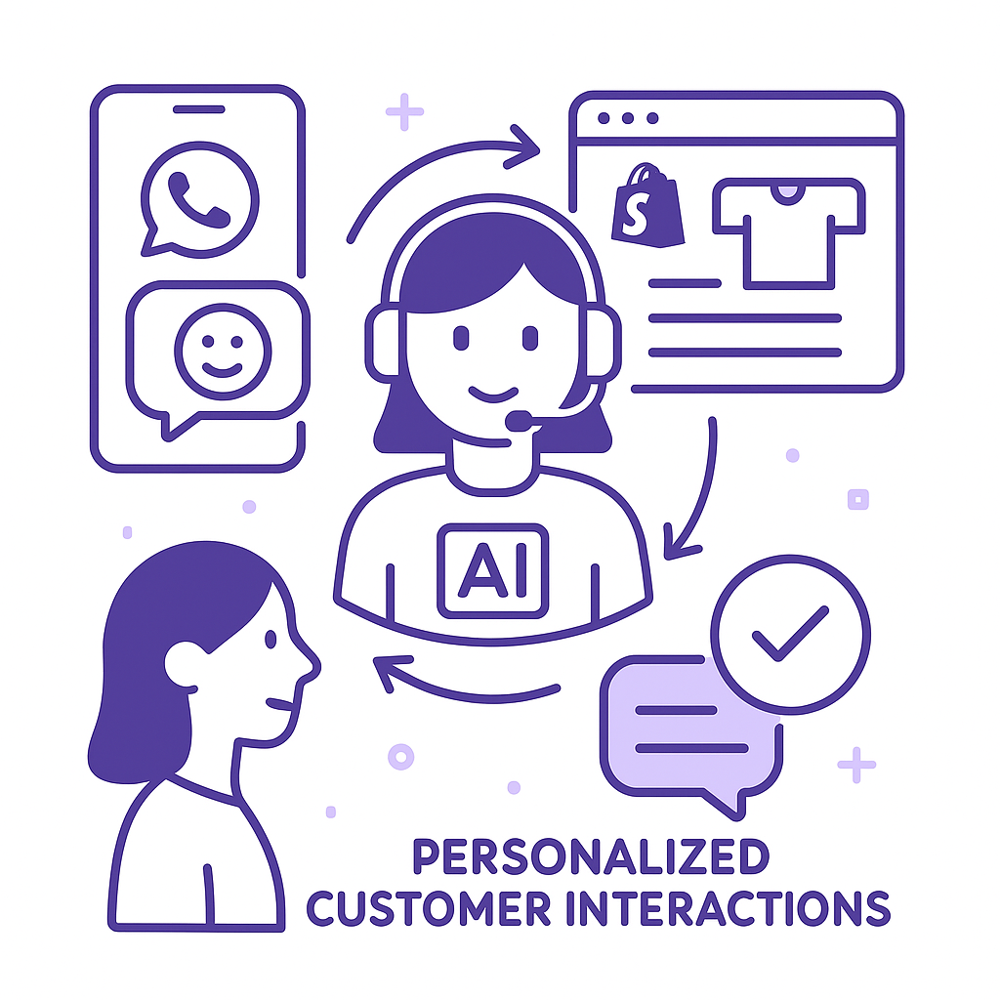
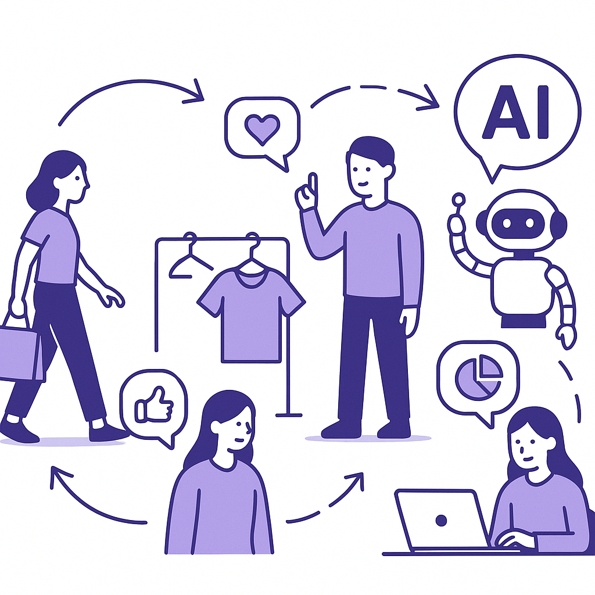
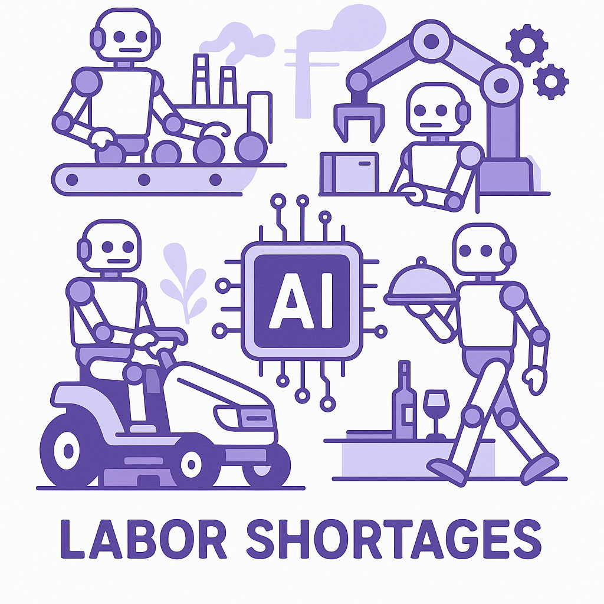

Publishing Recommendation
publishToday's posts effectively leverage current events and trends, offering practical insights into AI's role in CRM and retention marketing. The narratives around Salesforce's Slackbot and Meta's AI development provide useful perspectives without overhyping AI capabilities. The posts maintain a balanced tone, focusing on actionable outcomes rather than speculative hype, which aligns well with our brand voice. Overall, the content is ready for publication, as it offers valuable insights and maintains credibility.
LinkedIn Posts (10)
1. Salesforce launches new Slackbot AI agent amidst competition ★ Purands solution · high priority
CTA: How are you integrating AI into your customer engagement strategy?
{kind=link}
Image prompt · isometric-flat
Caption: AI agents enhancing CRM tools.
Alternative hooks
- Salesforce's AI Slackbot is a nod to what we've been doing at Purands AI.
- What does Salesforce's new AI Slackbot mean for customer engagement?
- AI in Slack is making headlines, but how does it truly impact CRM?
Research behind this post (sources, summaries & confidence)
Salesforce launches new Slackbot AI agent amidst competition conf 0.70 · Practical AI agents
Salesforce's introduction of a new AI agent for Slack highlights the increasing integration of AI in workplace tools, which could enhance customer relationship management and retention marketing efforts.
Sources & what I took from each
- Salesforce launched a new Slackbot AI agent.: Salesforce has announced the launch of a new AI agent integrated with Slack, aiming to improve workplace productivity. ↗ read source
Original trend links
Risks / caveats
- The impact of the AI agent is speculative as it depends on user adoption and integration success.
2. Stitch Fix expands AI image generation for personalization ★ Purands solution · high priority
CTA: What personalization strategies have worked for your brand?

⬇ Download image{kind=link}
Image prompt · isometric-flat
Caption: AI-powered personalization in action.
Alternative hooks
- Stitch Fix just leveled up with AI-driven personalization.
- AI isn't the future of customer engagement. It's the present.
- How are you personalizing your customer interactions?
Research behind this post (sources, summaries & confidence)
Stitch Fix expands AI image generation for personalization conf 0.70 · Retention marketing
Stitch Fix's use of AI for personalized image generation demonstrates the practical application of AI in enhancing customer engagement and retention, directly relevant to retention marketing initiatives.
Sources & what I took from each
- Stitch Fix has expanded its AI image generation capabilities.: RetailDive reports on Stitch Fix's expansion of AI-driven personalization features, particularly in image generation. ↗ read source
Original trend links
Risks / caveats
- The effectiveness and consumer reception of these features are yet to be fully evaluated.
3. AI's real cost challenges for tech companies ★ Purands solution · high priority
CTA: How are you balancing AI costs with performance in your marketing strategies?
Alternative hooks
- Google and Amazon are feeling the pinch of rising AI development costs.
- AI development is becoming a financial strain for tech giants like Google.
- As AI costs rise, scalability and cost-effectiveness are crucial.
Research behind this post (sources, summaries & confidence)
AI's real cost challenges for tech companies conf 0.70 · AI industry
The increasing costs associated with AI development pose challenges for tech companies like Amazon and Google, affecting investment strategies and the scalability of AI solutions in retention marketing.
Sources & what I took from each
- AI development costs are increasing for major tech firms.: Reports from TechCrunch highlight rising costs and challenges faced by companies like Amazon and Google. ↗ read source
Original trend links
Risks / caveats
- General industry trend; specific impacts on individual companies may vary.
4. Deploying retail AI to scale personalisation and customer insight ★ Purands solution · high priority
CTA: How have you seen AI change personalization in your sector?

⬇ Download image{kind=link}
Image prompt · isometric-flat
Caption: AI scaling personalization in retail.
Alternative hooks
- Retailers are turning to AI not just for novelty, but because it scales personalization and deepens customer insights.
- AI isn't just a buzzword for retailers; it's a tool for scaling personalization and improving customer insights.
- Ever wondered how AI transforms retail personalization? It’s more than just a trend - it's a game-changer.
Research behind this post (sources, summaries & confidence)
Deploying retail AI to scale personalisation and customer insight conf 0.60 · Customer Data Platforms
The deployment of AI in retail to enhance personalization and customer insights aligns closely with the goals of retention marketing, emphasizing the importance of AI in achieving better customer engagement.
Sources & what I took from each
- AI is being deployed in retail to enhance personalization.: Reports suggest that AI technologies are being used to drive better customer insights and personalization in retail. ↗ read source
Original trend links
Risks / caveats
- General claims without specific examples or metrics on effectiveness.
5. Meta's AI agent development slower than expected, says Zuckerberg
CTA: What are your thoughts on the pace of AI development in your field?
Alternative hooks
- Mark Zuckerberg recently shared a stark reality check on AI agent development at Meta.
- Meta's struggle with AI agent development reveals a universal truth about technology.
- What does Mark Zuckerberg's latest update mean for the future of AI?
Research behind this post (sources, summaries & confidence)
Meta's AI agent development slower than expected, says Zuckerberg conf 0.80 · AI industry
Understanding the pace of AI development at a major company like Meta is critical for evaluating the state of AI technology, especially in retention marketing where AI agents are a key component. This has direct implications for expectations and investment in AI-powered retention tools.
Sources & what I took from each
- Meta's AI agent development is slower than expected.: Statements by Mark Zuckerberg in internal meetings have confirmed delays in AI agent development. ↗ read source
Recent news
- https://www.reuters.com/business/zuckerberg-says-ai-agent-development-going-slower-than-expected-2026-07-02/
Original trend links
- https://techcrunch.com/2026/07/02/mark-zuckerberg-tells-staff-that-ai-agents-havent-progressed-as-quickly-as-hed-hoped/
- https://www.reuters.com/business/zuckerberg-says-ai-agent-development-going-slower-than-expected-2026-07-02/
Risks / caveats
- Reliance on internal company statements which might have strategic motives.
6. Railway raises $100M to challenge AWS with AI-native cloud infrastructure
CTA: Do you think AI-native infrastructure can compete with established cloud giants?
Alternative hooks
- Railway just raised $100 million to take on AWS.
- Why is AI-native infrastructure becoming crucial?
- Can Railway's $100M funding break AWS's hold?
Research behind this post (sources, summaries & confidence)
Railway raises $100M to challenge AWS with AI-native cloud infrastructure conf 0.70 · AI startups
Railway's funding highlights the increasing investment in AI-native infrastructure, which is essential for the scalability of retention marketing platforms that rely on AI.
Sources & what I took from each
- Railway raised $100 million for AI-native cloud infrastructure.: VentureBeat reports a significant funding round for Railway aimed at competing with AWS. ↗ read source
Original trend links
Risks / caveats
- Funding success does not guarantee competitive success against established players like AWS.
7. Anthropic redeploys Claude Fable 5 after control order lift
CTA: How do you see the return of Claude Fable 5 affecting AI strategies?
Alternative hooks
- Claude Fable 5 is back in play.
- US export controls lifted, and Claude Fable 5 returns.
- Anthropic redeploys Claude Fable 5, shaking up the AI landscape.
Research behind this post (sources, summaries & confidence)
Anthropic redeploys Claude Fable 5 after control order lift conf 0.70 · AI industry
The redeployment of Claude Fable 5 by Anthropic signifies the return of a key AI model that could influence market dynamics in the AI sector, impacting retention marketing strategies.
Sources & what I took from each
- Anthropic has redeployed Claude Fable 5.: VentureBeat reports the redeployment of Claude Fable 5 following the lifting of US export controls. ↗ read source
Original trend links
Risks / caveats
- The impact on market dynamics is speculative and dependent on adoption.
8. Anthropic discusses new custom chip with Samsung
CTA: How do you think custom chips could impact AI strategies in your field?
Alternative hooks
- Anthropic and Samsung's chip talks could change the AI landscape.
- Will custom AI chips redefine efficiency in tech?
- What Anthropic's discussions with Samsung mean for AI's future.
Research behind this post (sources, summaries & confidence)
Anthropic discusses new custom chip with Samsung conf 0.60 · AI startups
The development of custom chips for AI by companies like Anthropic represents a significant shift in AI infrastructure, which can have implications for the efficiency and cost-effectiveness of AI solutions used in retention marketing.
Sources & what I took from each
- Anthropic is discussing custom chip development with Samsung.: Reports indicate ongoing discussions between Anthropic and Samsung regarding the development of custom AI chips. ↗ read source
Original trend links
Risks / caveats
- Discussions do not guarantee development; potential for the project to not proceed.
9. Japan's AI model for 10 million robots to address worker shortage
CTA: What are your thoughts on AI's role in addressing labor shortages?

⬇ Download image{kind=link}
Image prompt · isometric-flat
Caption: AI managing robotic labor.
Alternative hooks
- Japan's plan for 10 million AI-managed robots is not science fiction.
- Could AI-managed robots solve Japan's labor crisis?
- How Japan plans to fill labor gaps with AI and robotics.
Research behind this post (sources, summaries & confidence)
Japan's AI model for 10 million robots to address worker shortage conf 0.60 · AI in business
Japan's plan to deploy an AI model for managing 10 million robots to counter worker shortages has potential implications for AI-driven automation in customer engagement and retention strategies.
Sources & what I took from each
- Japan is planning to deploy AI for managing 10 million robots.: Reports indicate strategic national plans to use AI in addressing labor shortages through robotics. ↗ read source
Original trend links
Risks / caveats
- Long-term plans with uncertain implementation and impact.
10. Google redesigns search box for the first time in 25 years
CTA: What changes do you anticipate in your SEO strategy with this update?
Alternative hooks
- Google's search box just got its first redesign in 25 years.
- A major change in how we search online just happened.
- Google's search box redesign is stirring up the digital marketing world.
Research behind this post (sources, summaries & confidence)
Google redesigns search box for the first time in 25 years conf 0.60 · AI in business
The redesign of Google's search box could impact how users interact with search engines, affecting digital marketing strategies that rely on search visibility and user engagement.
Sources & what I took from each
- Google has redesigned its search box.: VentureBeat reports on Google's first search box redesign in 25 years, suggesting potential impacts on user interaction. ↗ read source
Original trend links
Risks / caveats
- The redesign's impact on SEO and user behavior remains to be seen.
Today's Trends
| # | Trend | Category | Why it matters |
|---|---|---|---|
| 1 | Meta's AI agent development slower than expected, says Zuckerberg
source source |
AI industry | Understanding the pace of AI development at a major company like Meta is critical for evaluating the state of AI technology, especially in retention marketing where AI agents are a key component. This has direct implications for expectations and investment in AI-powered retention tools. |
| 2 | Salesforce launches new Slackbot AI agent amidst competition
source |
Practical AI agents | Salesforce's introduction of a new AI agent for Slack highlights the increasing integration of AI in workplace tools, which could enhance customer relationship management and retention marketing efforts. |
| 3 | Anthropic discusses new custom chip with Samsung
source |
AI startups | The development of custom chips for AI by companies like Anthropic represents a significant shift in AI infrastructure, which can have implications for the efficiency and cost-effectiveness of AI solutions used in retention marketing. |
| 4 | WhatsApp commerce innovations: WhatsApp-driven commerce platform for Nigeria
source |
WhatsApp commerce | The development of a WhatsApp-driven commerce platform in Nigeria highlights the growing importance of messaging-first commerce solutions in the APAC region and beyond, crucial for retention marketing strategies. |
| 5 | Railway raises $100M to challenge AWS with AI-native cloud infrastructure
source |
AI startups | Railway's funding highlights the increasing investment in AI-native infrastructure, which is essential for the scalability of retention marketing platforms that rely on AI. |
| 6 | Deploying retail AI to scale personalisation and customer insight
source |
Customer Data Platforms | The deployment of AI in retail to enhance personalization and customer insights aligns closely with the goals of retention marketing, emphasizing the importance of AI in achieving better customer engagement. |
| 7 | Startup Battlefield Australia applications closing soon
source |
AI startups | The closing of applications for Startup Battlefield Australia is a key event for identifying emerging AI startups in the APAC region, which could become partners or competitors in the retention marketing space. |
| 8 | Loyalty program design insights with Shopify integration
source |
Shopify ecosystem | Insights into loyalty program design within the Shopify ecosystem are crucial for companies looking to enhance customer retention through effective loyalty strategies. |
| 9 | Anthropic redeploys Claude Fable 5 after control order lift
source |
AI industry | The redeployment of Claude Fable 5 by Anthropic signifies the return of a key AI model that could influence market dynamics in the AI sector, impacting retention marketing strategies. |
| 10 | Japan's AI model for 10 million robots to address worker shortage
source |
AI in business | Japan's plan to deploy an AI model for managing 10 million robots to counter worker shortages has potential implications for AI-driven automation in customer engagement and retention strategies. |
| 11 | Stitch Fix expands AI image generation for personalization
source |
Retention marketing | Stitch Fix's use of AI for personalized image generation demonstrates the practical application of AI in enhancing customer engagement and retention, directly relevant to retention marketing initiatives. |
| 12 | Google redesigns search box for the first time in 25 years
source |
AI in business | The redesign of Google's search box could impact how users interact with search engines, affecting digital marketing strategies that rely on search visibility and user engagement. |
| 13 | AI's real cost challenges for tech companies
source |
AI industry | The increasing costs associated with AI development pose challenges for tech companies like Amazon and Google, affecting investment strategies and the scalability of AI solutions in retention marketing. |
| 14 | Alibaba's Page Agent: AI-driven web interface control
source |
Practical AI agents | Alibaba's Page Agent represents an innovative use of AI for web interface control, relevant for enhancing user experience and engagement in online retail, which is crucial for retention marketing. |
Risk Assessment
No risks flagged.
Suggested LinkedIn Comments (30)
Open each post, then paste the copied comment. Nothing is posted automatically.
1. insight · Ted C. — We're hiring! 🚨 Looking for an AI Forward Deployed Engineer to join the Alaris
Post by: Ted C.
Why it works: It highlights the value of automation in M&A and appeals to engineers looking for impactful work.
↗ Open LinkedIn post to paste comment2. opinion · Joe Reis — If you’re a data or AI leader, which best describes you today? AI is everywhere
Post by: Joe Reis
Why it works: It underscores the importance of leaders being hands-on with tech to drive better outcomes.
↗ Open LinkedIn post to paste comment3. opinion · Beegee Alop — I’m increasingly convinced there are only two types of AI agents: Stateful agen
Post by: Beegee Alop
Why it works: It provides a clear stance on the importance of statefulness in AI agents, adding depth to the discussion.
↗ Open LinkedIn post to paste comment4. insight · Ravi Krishnan — The offline feedback to my newsletter's first article highlighted a consensus: t
Post by: Ravi Krishnan
Why it works: It draws on personal experience to validate the author's observation, adding credibility.
↗ Open LinkedIn post to paste comment5. insight · Jeffrey L. — New review up on the Trending Society page: Firecrawl. It's the API that turns
Post by: Jeffrey L.
Why it works: It emphasizes the practical benefits of the tool, linking it to broader innovation goals.
↗ Open LinkedIn post to paste comment6. expansion · Asmau A. — I am currently beating my entire family in a World Cup bracket, and no, I will n
Post by: Asmau A.
Why it works: It connects the personal story to a broader point about data and prediction, adding depth.
↗ Open LinkedIn post to paste comment7. opinion · Valentina Jordan — 4/5 potential clients I have talked to this week don't really know what an AI ag
Post by: Valentina Jordan
Why it works: It supports the author's point by stressing the importance of demystifying AI jargon.
↗ Open LinkedIn post to paste comment8. insight · Brittany Wright — Exploring the evolving landscape of AI governance, my next article delves into h
Post by: Brittany Wright
Why it works: It emphasizes the importance of governance, aligning with the author's focus on authority and constraints.
↗ Open LinkedIn post to paste comment9. respectful challenge · Lindsay A. Owens, PhD — Silicon Valley is attempting to sell us a frictionless existence stewarded by an
Post by: Lindsay A. Owens, PhD
Why it works: It acknowledges the benefits while emphasizing the need for ethical considerations, adding depth.
↗ Open LinkedIn post to paste comment10. opinion · Ravi Sankar Vemuri — Every major wave of computing changed what software could do. AI agents change w
Post by: Ravi Sankar Vemuri
Why it works: It stresses the importance of ethical considerations in AI development, supporting the author's focus on design and safety.
↗ Open LinkedIn post to paste comment11. insight · Justin Feldman, EIT — Here's a simple, high-level overview, of an AI agent I put together for myself.
Post by: Justin Feldman, EIT
Why it works: It adds practical value by emphasizing the cognitive benefits of AI in personal workflows.
↗ Open LinkedIn post to paste comment12. respectful challenge · Arlan Rakhmetzhanov — We're giving away up to $500,000 to interns so they can order food with our AI.
Post by: Arlan Rakhmetzhanov
Why it works: It acknowledges the innovation while questioning the practical challenges, adding depth to the discussion.
↗ Open LinkedIn post to paste comment13. insight · Loles Olaya — Learning Challenge - Day 178/365: Generative AI for Product Managers ✅ 🤖 Genera
Post by: Loles Olaya
Why it works: It highlights the effectiveness of specificity in AI applications, adding a layer of understanding to the post.
↗ Open LinkedIn post to paste comment14. opinion · Katie Robbert — Quick PSA: Do not blindly accept answers from your LLM. Just don't. Christophe
Post by: Katie Robbert
Why it works: It reinforces the need for human oversight in AI use, aligning with the original warning and adding personal emphasis.
↗ Open LinkedIn post to paste comment15. insight · Dr. David Burkus — AI isn't a tool; AI is a teammate. Most organizations are still treating AI lik
Post by: Dr. David Burkus
Why it works: It reframes AI usage in a way that encourages more collaborative and beneficial interactions.
↗ Open LinkedIn post to paste comment16. insight · Swami Ranganathan — How AI Hardware as a Service can be a good solution to token cost escalation
Post by: Swami Ranganathan
Why it works: It highlights a key financial benefit, making the concept more appealing and practical for businesses.
↗ Open LinkedIn post to paste comment17. insight · Kellen Geselbracht — We’re still looking for someone to help shape and build out our Generative AI ar
Post by: Kellen Geselbracht
Why it works: It emphasizes the importance of structure and responsibility, crucial for enterprise AI adoption.
↗ Open LinkedIn post to paste comment18. expansion · BI4ALL — ❗Are you using AI to talk more — or to think better?❗ Everyone's talking about
Post by: BI4ALL
Why it works: It expands on the original idea, emphasizing the deeper strategic potential of AI beyond content creation.
↗ Open LinkedIn post to paste comment19. expansion · Ted Shelton — Generative AI will put information hoarders and network node roles out work as t
Post by: Ted Shelton
Why it works: It broadens the conversation about AI's impact on work, focusing on structural changes rather than mere displacement.
↗ Open LinkedIn post to paste comment20. opinion · Howie Singer — The Generative AI companies have made many specious arguments as to why training
Post by: Howie Singer
Why it works: It acknowledges the complexity of the legal debate, adding a balanced perspective that considers multiple stakeholders.
↗ Open LinkedIn post to paste comment21. insight · Pankaj Zanke — 𝐉𝐮𝐬𝐭 𝐩𝐮𝐛𝐥𝐢𝐬𝐡𝐞𝐝 𝐦𝐲 𝐥𝐚𝐭𝐞𝐬𝐭 𝐋𝐢𝐧𝐤𝐞𝐝𝐈𝐧 𝐍𝐞𝐰𝐬𝐥𝐞𝐭𝐭𝐞𝐫! Generative AI UX Design Principle
Post by: Pankaj Zanke
Why it works: It highlights the importance of user trust and aligns with our knowledge of AI-driven engagement.
↗ Open LinkedIn post to paste comment22. opinion · Ajaz Hussain, Ph.D. — An interesting discussion on CNBC caught my attention regarding the generative A
Post by: Ajaz Hussain, Ph.D.
Why it works: It adds a critical perspective on AI scalability that resonates with our evidence-based approach.
↗ Open LinkedIn post to paste comment23. insight · Jennifer Rhode — Loftware continues to thrive & grow! 🏆 We're #hiring an AI Transformation & Enab
Post by: Jennifer Rhode
Why it works: It recognizes the strategic importance of such roles and reflects our understanding of AI integration challenges.
↗ Open LinkedIn post to paste comment24. insight · Lee Grubb — 🚨 Now Hiring: Senior Security Architect – AI & Application Security If your bac
Post by: Lee Grubb
Why it works: It highlights the dual role of security in AI as both a safeguard and an enabler, which is a nuanced take.
↗ Open LinkedIn post to paste comment25. expansion · Edward Narke — Playing out right now at the FDA Very interesting discussion this week…
Post by: Edward Narke
Why it works: It broadens the conversation by recognizing the regulatory aspect of AI in healthcare.
↗ Open LinkedIn post to paste comment26. insight · Petar J. — Artificial intelligence is no longer a future concept, it is rapidly becoming on
Post by: Petar J.
Why it works: It emphasizes the complementary nature of AI and human skills, which is key to effective AI adoption.
↗ Open LinkedIn post to paste comment27. expansion · Lucia Antonucci — Artificial Intelligence is no longer an abstract concept operating behind system
Post by: Lucia Antonucci
Why it works: It expands on the post by discussing the skills and approaches needed for this AI transition.
↗ Open LinkedIn post to paste comment28. opinion · Emily Kilpatrick — In today’s rapidly evolving digital landscape, Artificial Intelligence is no lon
Post by: Emily Kilpatrick
Why it works: It presents a clear view on AI's transformative impact on business structures and strategy.
↗ Open LinkedIn post to paste comment29. insight · Rajendra Kumar — PayPal is hiring Machine Learning Engineer role! Apply
Post by: Rajendra Kumar
Why it works: It connects the hiring need to the broader trend of data-driven finance, adding context.
↗ Open LinkedIn post to paste comment30. insight · Ivica Nigay — Artificial Intelligence is no longer confined to research labs or backend system
Post by: Ivica Nigay
Why it works: It ties AI's real-time capabilities to concrete productivity improvements, adding depth to the post.
↗ Open LinkedIn post to paste comment